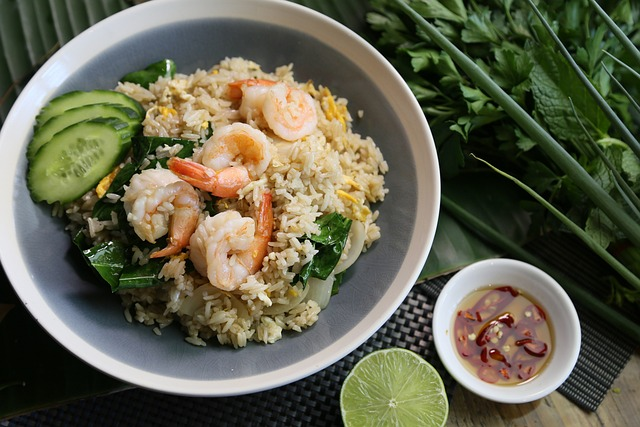

Prawn Fried Rice

A Quick Prawn Fried Rice
Ingredients
- 2 tsp vegetable oil
- 1 tsp frozen chopped garlic
- 1 tsp frozen chopped ginger
- ½ red chilli, sliced, optional
- 80g frozen shredded Savoy cabbage
- 1 medium carrot, grated
- 150g leftover cooked rice
- 1 tsp reduced-salt soy sauce
- ½ tsp sesame oil
Steps
- Heat the vegetable oil in a large frying pan or wok. Stir-fry the garlic,
ginger and chilli (if using), together for 1 min over high heat, until fragrant.
- Add the frozen cabbage and the grated carrot and cook for 2-3 mins until softened.
- Add the rice to the pan, along with the sesame oil and soy sauce and cook for 5 mins,
stirring constantly, until beginning to crisp.
- Add the spring onion and the prawns and cook for 1 min to heat through.
- Spoon the fried rice onto a plate and drizzle with the sriracha sauce and
some extra chopped chilli if you like.